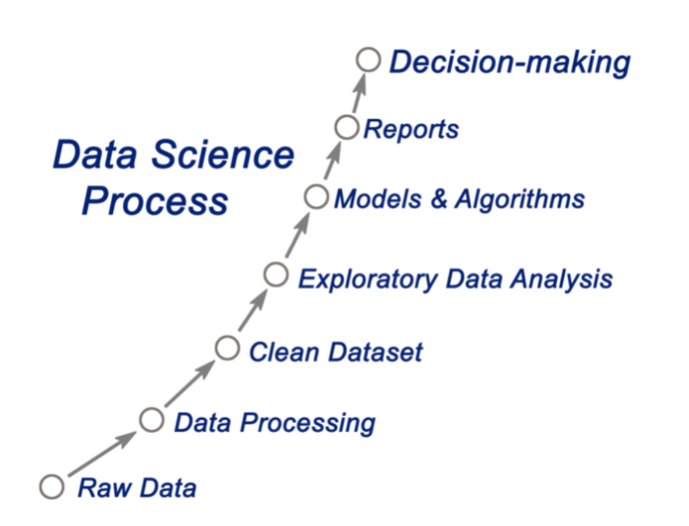

Alice's Dataland
My Data Science Project Process
I love working on data science projects. They allow me to apply what I've learned in classes to solve problems in real life.
Here are the steps I take to complete a data science project:
R
- Gun Violence Project
- Data Transformation
- Data Exploration
- Data Analysis
- Data Visualization
- Machine Learning
- Data Cleaning
- Result
What this project is about...
What this project is about...
Power Bi
- Mutal Funds Project
- Food & Stuff Sales Analysis
What this project is about...
What this project is about...